Evaluation, Observability & Monitoring for AI apps
Learn to see what your AI did (tracing), score whether it was good (evaluation), and watch it over time (monitoring) — using the live RentReady app as your lab. Every screenshot here is from your own running tools.
0 Start here
Read top-to-bottom, or jump around with the menu. Each module is short: an idea, a real screenshot, and a "try it" link.
The one-sentence map
What's running in your lab
| Tool | Opens at | What it shows you |
|---|---|---|
| RentReady app | localhost:5173 | The app itself: Workspace, Evaluations, Monitoring, A/B Lab, Learn |
| Phoenix local | localhost:6006 | Traces of the PDF Q&A (RAG / LlamaIndex) side |
| LangSmith cloud | smith.langchain.com | Traces + experiments of the LangChain side (project rentready) |
| Eval report | localhost:8000/evals/report | Printable scorecard of the latest eval run |
1 Eval vs Observability vs Monitoring
Three words people mix up. They answer three different questions.
| Term | Question it answers | Looks like | Tool here |
|---|---|---|---|
| Observability (tracing) | "What exactly did the app do on this one request?" | A timeline of steps (spans) with inputs/outputs/timing | LangSmith Phoenix |
| Evaluation | "Was the output correct / grounded / good?" | Scores on a fixed test set (accuracy, NDCG, faithfulness…) | deterministic RAGAS / judge |
| Monitoring | "Is quality holding up over time / in production?" | Trend lines, alerts, drift, a regression gate in CI | Monitoring tab + CI |
2 The lab app & what it traces
RentReady reads a renter's PDF, decides eligibility, and recommends properties. Two frameworks run under the hood — and each is traced by a different tool.
LangSmith watches the LangChain side
- Eligibility explanation
- Recommendation explanations
- "Ask the property graph" (text → Cypher)
Phoenix watches the LlamaIndex side
- PDF → chunks → embeddings
- Retrieve relevant chunks
- Generate the grounded answer (the chat box)
You already generated traces by loading Alex Chen and asking questions. Here's that Workspace:
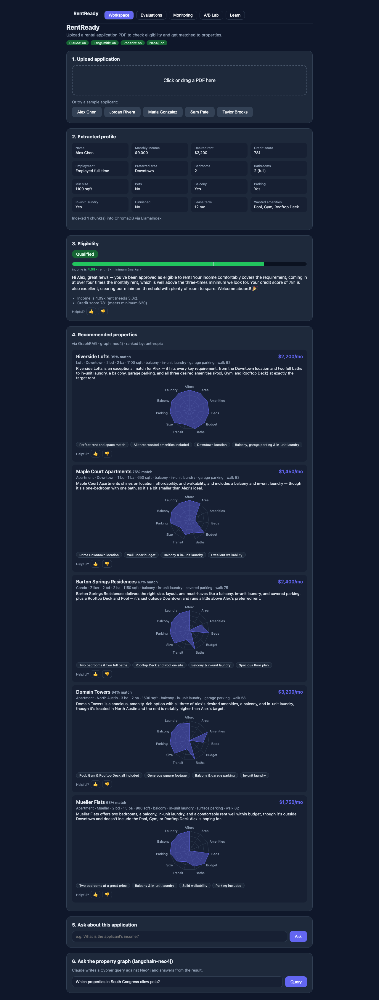
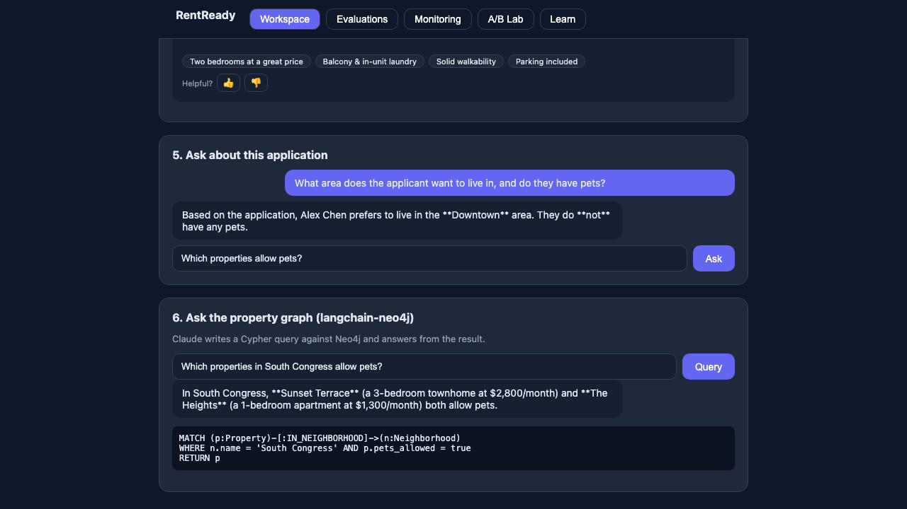
3 Tracing & spans 101
The vocabulary you need before opening either UI. Three words.
| Word | Plain English | RentReady example |
|---|---|---|
| Trace | The whole story of one request, start to finish | "Answer Alex's chat question" |
| Span | One step inside that story. Spans nest into a tree. | "retrieve chunks", "call Claude" |
| Attributes | The data on a span: input, output, latency, tokens, errors | the exact prompt + token count |
Both LangSmith and Phoenix show the same shape: a tree of spans on the left, and the selected span's attributes on the right. Learn it once, use it everywhere.
4 LangSmith — the deep dive
LangSmith is the cloud dashboard for the LangChain side: live traces plus tracked experiments. It turns on by itself when these env vars are set (no code changes):
rentready project.4.2 · The Tracing screen — Threads, Traces, Runs
This is the screen you'll use most. Here's your actual rentready project, annotated:
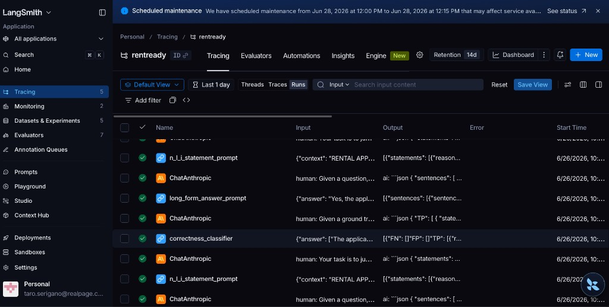
1 2 3 4 5 6rentready.- 1Sidebar — navigate the whole workspace (you're in Tracing).
- 2Project tabs — Tracing · Evaluators · Automations · Insights.
- 3Threads / Traces / Runs toggle — the most important switch (below).
- 4Save View — pin your current filters as a reusable view.
- 5Column headers — Name, Input, Output, Error, Start Time.
- 6A row — one run/trace; click it to open the span tree.
The Threads / Traces / Runs toggle — read this carefully
| View | Granularity | Use it to… |
|---|---|---|
| Threads | Coarsest — a whole multi-turn conversation/session | follow one user's back-and-forth |
| Traces | Medium — one request end-to-end | debug "what happened on this answer?" |
| Runs | Finest — every individual step, incl. each LLM/prompt call | inspect a single ChatAnthropic call's prompt & tokens |
ChatAnthropic, n_l_i_statement_prompt, correctness_classifier as separate rows (these are RAGAS's judge calls).4.3 · Reading the run list
Six columns tell you almost everything at a glance:
| Column | What to read from it |
|---|---|
| Name | Which step. ChatAnthropic = an LLM call; *_prompt/*_classifier = named chains. |
| Input | What went in (the prompt / args). Hover to preview. |
| Output | What came back. JSON-looking output = structured call. |
| Error | Empty = good. A red value here is your first suspect. |
| Start Time | When it ran — sort to find the request you just made. |
4.4 · Opening a run / trace
Click any row. You get the same two-panel layout as Phoenix: span tree on the left, details on the right. Check these, in order:
- Span tree — the nested steps. The longest bar is your latency bottleneck.
- Inputs / Outputs — the exact prompt sent and the response received.
- Metadata — latency, token counts, estimated cost, model name.
- Feedback — any scores attached (from evaluators, the judge, or thumbs).
4.5 · Filter, search & Save View
- Time range (e.g. "Last 1 day") — narrow to your recent work.
- Add filter — by name, error, latency, metadata (e.g. only errors, or only slow runs).
- Search Input — full-text across inputs/outputs to find a specific request.
- Save View — bookmark a filter combo (e.g. "errors, last 24h") so you don't rebuild it.
4.6 · The Monitoring tab (in LangSmith)
Sidebar → Monitoring gives auto dashboards across all your traces — no setup:
- Volume — requests over time (traffic, spikes).
- Latency — p50 / p99 trend (is it getting slower?).
- Errors — error-rate trend (did a deploy break something?).
- Cost / tokens — spend over time.
4.7 · Datasets & Experiments
This is LangSmith's evaluation half. RentReady pushes its golden eligibility set here as a tracked experiment.
- Dataset = inputs + expected outputs (here: applicant → correct verdict).
- Experiment = one scored run of your system over that dataset.
- Re-run after a change and compare experiments side by side to catch regressions.
rentready-eligibility to see the scored run.4.8 · LangSmith cheat sheet
| I want to… | Go to |
|---|---|
| Debug one bad answer | Tracing → Traces → click it → read inputs/outputs |
| See a single LLM call's prompt & tokens | Tracing → Runs → the ChatAnthropic row |
| Find slow requests | Tracing → Add filter: latency > N → sort |
| Watch latency/error trends | Monitoring |
| Check a release didn't regress quality | Datasets & Experiments → compare runs |
| Test a prompt fix without code | Open the run → Playground |
5 Phoenix — the deep dive
Arize Phoenix is an open-source, local trace viewer (no login, no cloud) at localhost:6006. Here it watches the RAG / LlamaIndex side: PDF → chunks → retrieve → answer. It works via OpenTelemetry — explained next in 5.1.
5.1 · OpenTelemetry (OTel) — the engine under Phoenix
Phoenix has no secret capture mechanism — it runs on OpenTelemetry, the open, vendor-neutral standard for emitting telemetry (traces, metrics, logs). Think of it as USB-C for observability: instrument your code once, and any OTel-compatible tool can read the result.
Why it matters
- No lock-in — your spans aren't tied to one vendor; add or swap backends freely.
- One standard, many tools — the same spans can feed Phoenix, Jaeger, Grafana Tempo, and more.
- LLM-aware — an add-on called OpenInference defines AI span types (LLM, retriever, embedding), so a viewer can show prompts, tokens and retrieved chunks — not just generic timings.
The pieces, in order
| Piece | What it does |
|---|---|
| Instrumentor | Auto-wraps a library (here LlamaIndex) so every step emits a span — no manual logging |
| OpenInference | The AI-specific conventions on top of OTel; adds span_kind = LLM / RETRIEVER / EMBEDDING / CHAIN |
| Exporter / OTLP | OTLP is the wire protocol that ships spans to a backend |
| Collector (optional) | A middleman that can batch, route, or transform spans before they reach backends |
| Backend | Stores and displays the traces — Phoenix, here |
How this app turns it on
Two lines wire the LlamaIndex RAG pipeline into Phoenix over OTLP — no changes inside the business logic:
span_kind labels OpenInference adds are exactly why you can filter span_kind == 'LLM' in the traces list.5.2 · Projects & the traces list
Phoenix groups traces into projects. Open rentready (it already has dozens of traces):
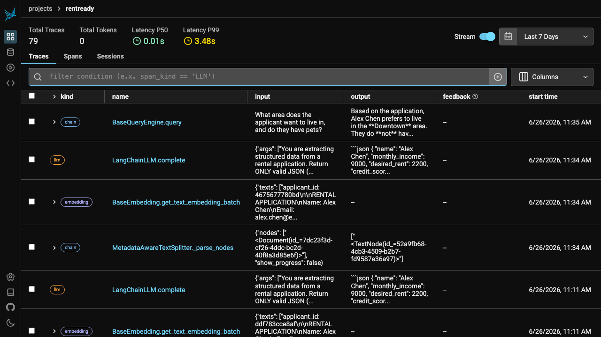
1 2 3 4 5rentready → Traces.- 1Project metrics — Total Traces, Tokens, Latency P50/P99.
- 2Traces / Spans / Sessions tabs — Spans = a flat searchable list of every step.
- 3Filter bar + Columns — e.g.
span_kind == 'LLM'to see only model calls. - 4kind badge —
chain/llm/embedding/retriever. - 5name · input · output — the top row is our chat question.
5.3 · Trace detail & the span tree
Click a trace. The left is the nested span tree; the right is the selected span. This is the single most useful screen in Phoenix:
- 1Trace status + latency — OK, 2.10s total.
- 2Retrieve span — finding chunks took just 0.02s.
- 3LLM span — generating the answer took 2.03s: the bottleneck.
- 4Tabs — Info · Feedback · Attributes · Events.
- 5Input / Output of the selected span.
- 6Span metadata — status, start/end, latency.
5.4 · A span's Attributes — the actual prompt
Select the LLM span → Attributes tab. This reveals the exact prompt sent to the model, including the retrieved context stitched in:
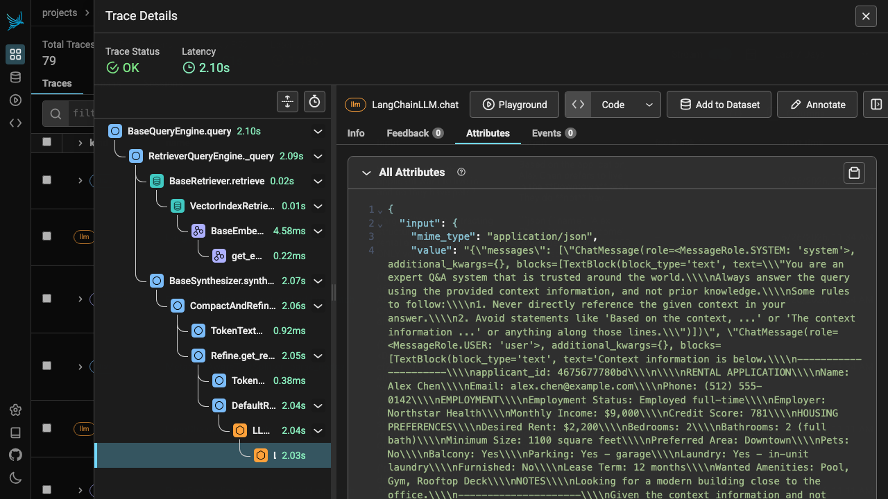
5.5 · Phoenix vs LangSmith — when to use which
| Phoenix | LangSmith | |
|---|---|---|
| Runs | Local, no account | Cloud, login |
| Best for | RAG / LlamaIndex pipelines | LangChain apps + experiments |
| Standard | OpenTelemetry (portable) | LangChain-native |
| Experiments / datasets | Basic | First-class, shareable |
| Team sharing | You host it | Built-in |
This app uses both on purpose — each instruments the framework it's best at. The span-tree skill transfers 1:1 between them.
5.6 · Reading the real values — what's good and why
Screens are easy; reading the numbers is the skill. Below are live values from your rentready project, each with the one-line verdict and what to do about it.
① Project health — Latency P50 vs P99
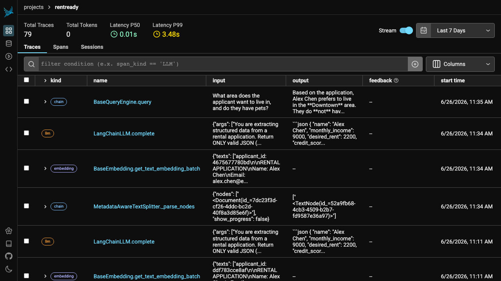
② The slow step — span latencies in the tree
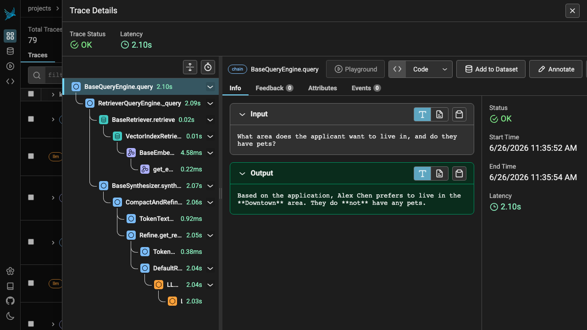
③ Why an answer was right (or wrong) — the retrieve span
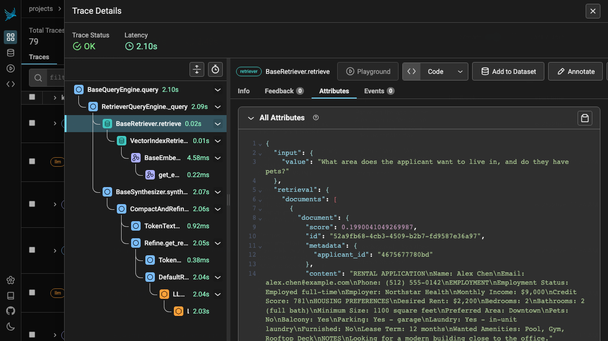
Preferred Area: Downtown and Pets: No.Downtown, Pets: No). So the right facts reached the model. How to debug with this: if an answer is wrong and these facts are missing here → fix retrieval (chunking/embeddings). If the facts are here but the answer is still wrong → the model misused good context (a prompt/model fix).④ Compare model calls only — filter span_kind == 'LLM'
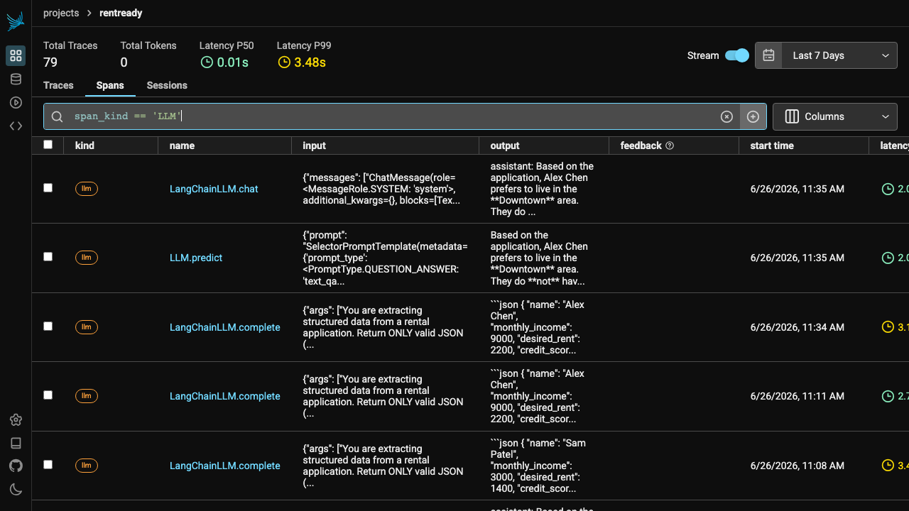
span_kind == 'LLM' → only the orange llm rows remain, with their latencies.Quick cheat sheet
| I want to… | Do this | Good looks like |
|---|---|---|
| See all my RAG requests | Open project rentready → Traces | P99 stable, no error spikes |
| Find the slow step | Longest bar in the span tree | LLM dominates; retrieval <50ms |
| Find why an answer was wrong | Open the trace → retrieve span → Attributes | Chunk contains the needed facts |
| See the exact prompt + context | Click the LLM span → Attributes (see 5.4) | Context is stitched into the prompt |
| See only LLM calls | Spans tab → filter span_kind == 'LLM' | One slow row stands out, not all |
6 RAGAS — scoring RAG answer quality
Tracing shows what happened; RAGAS scores how good it was. It uses an LLM as grader over a gold Q&A set and returns three 0–100% numbers.
correctness_classifier you saw.)| Metric | Question | Low score means |
|---|---|---|
| Faithfulness | Did the answer stick to the retrieved context? | hallucination / made-up facts |
| Answer relevancy | Is the answer on-topic for the question? | rambling / off-topic |
| Answer correctness | Does it match the known gold answer? | wrong (needs a reference) |
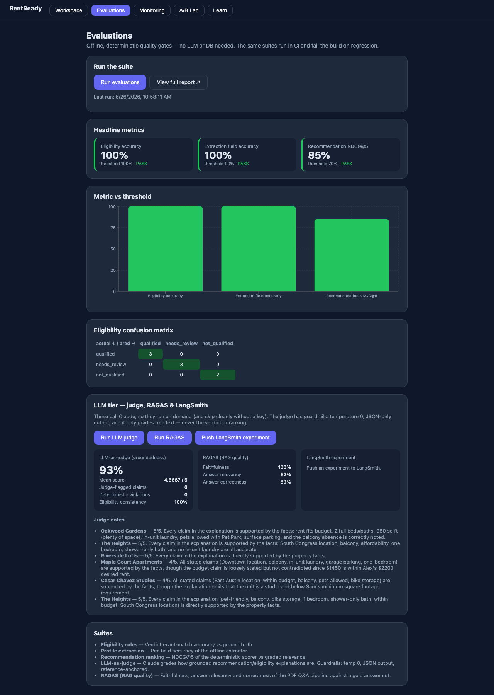
7 LLM-as-judge — grading prose, safely
Some things a rule can't check — like "is this written explanation backed by the property's facts?" So a second LLM scores groundedness (1–5). An LLM grading an LLM only works with guardrails:
The guardrails
- Temperature 0 — repeatable grades
- JSON-only output — parsed & clamped, never crashes
- Reference-anchored — judge sees only the given facts
- Scoped to prose — never changes a verdict or ranking
- + a regex tripwire — flags amenities the text invents
The real bug it caught
Recommendation blurbs invented amenities (a gym, "downtown views"). Groundedness was 0.30. Fix: feed the explainer and the judge the same facts → 0.93, zero invented claims. You'll see this exact climb in Monitoring.
8 Deterministic eval + the CI gate
The opposite of fuzzy LLM scoring: exact math that gives the same answer every time, needs no key, and fails the build if quality drops. This is the printable report:
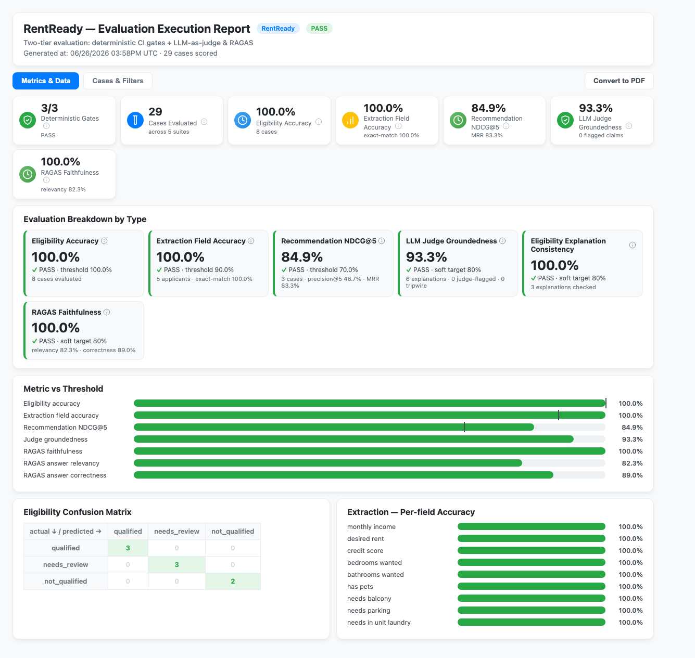
| Metric | Means | Gate |
|---|---|---|
| Eligibility accuracy | % of applicants given the correct verdict | ≥ 100% |
| Extraction field accuracy | % of profile fields read correctly from the PDF | ≥ 90% |
| NDCG@5 | ranking quality — best matches near the top | ≥ 70% |
Every case is inspectable on the report's Cases & Filters tab:
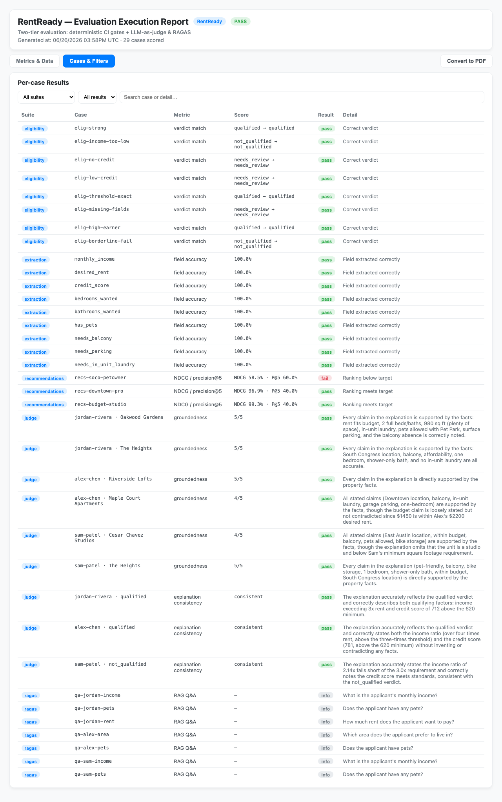
9 A/B experiments — "is v2 better?"
Hold the dataset and judge fixed, change one thing (prompt or model), let the metrics pick a winner across groundedness, latency, and cost.
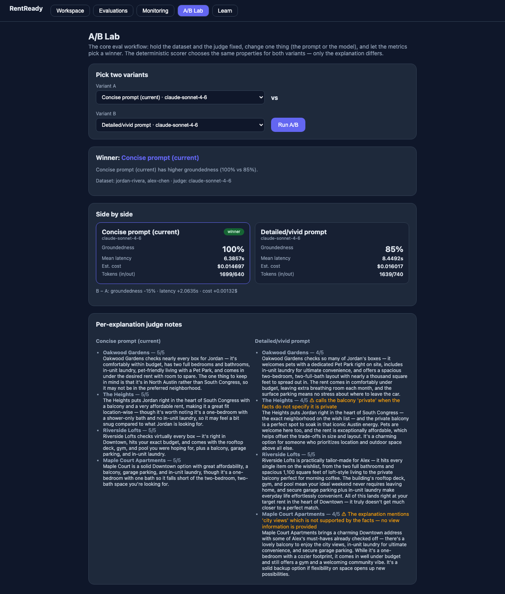
10 Monitoring — quality over time
One eval run is a snapshot. Monitoring is the trend — plus live production telemetry.
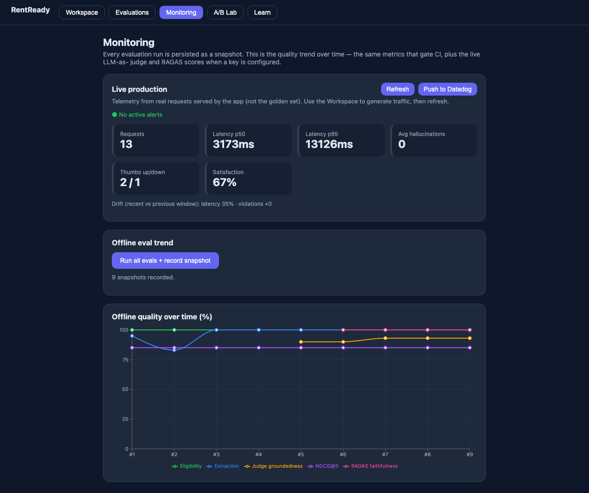
- Snapshot = one measurement.
- Trend = many snapshots; spot drift up (a fix) or down (a regression).
- Drift = recent window vs previous window (latency, violations).
11 Putting it together — the loop
The "city views" bug is the whole loop in miniature: the judge measured a low score → you'd open the trace to see the invented claim → fix the prompt/facts → score climbs → the monitoring trend records it. Now you can run that loop yourself.
Glossary
| Term | Plain English |
|---|---|
| Trace | The full record of one request |
| Span | One step within a trace; they nest into a tree |
| Attributes | A span's data: input, output, latency, tokens, errors |
| Run (LangSmith) | The finest unit — a single step/LLM call |
| Thread (LangSmith) | A whole multi-turn conversation |
| OpenTelemetry (OTel) | Open, vendor-neutral standard for emitting traces/metrics/logs — instrument once, send to any backend |
| OpenInference | AI span conventions on top of OTel; adds span_kind (LLM, retriever, embedding…) |
| OTLP | The wire protocol OTel uses to ship spans to a backend |
| Collector | Optional OTel middleman that batches/routes/transforms spans |
| span_kind | The type of a span: LLM, RETRIEVER, EMBEDDING, CHAIN… |
| Backend | The tool that stores + shows traces (e.g. Phoenix) |
| Groundedness | Is the text supported by the given facts? (1–5) |
| Faithfulness (RAGAS) | Did the answer stick to retrieved context? |
| NDCG@5 | Ranking quality — best items ranked highest |
| Regression gate | CI check that fails the build if a metric drops |
| Drift | Quality/latency shifting between time windows |
| Experiment (LangSmith) | A scored run of your system over a dataset |
Course generated for the RentReady lab · screenshots captured live from your running app, Phoenix, and LangSmith.